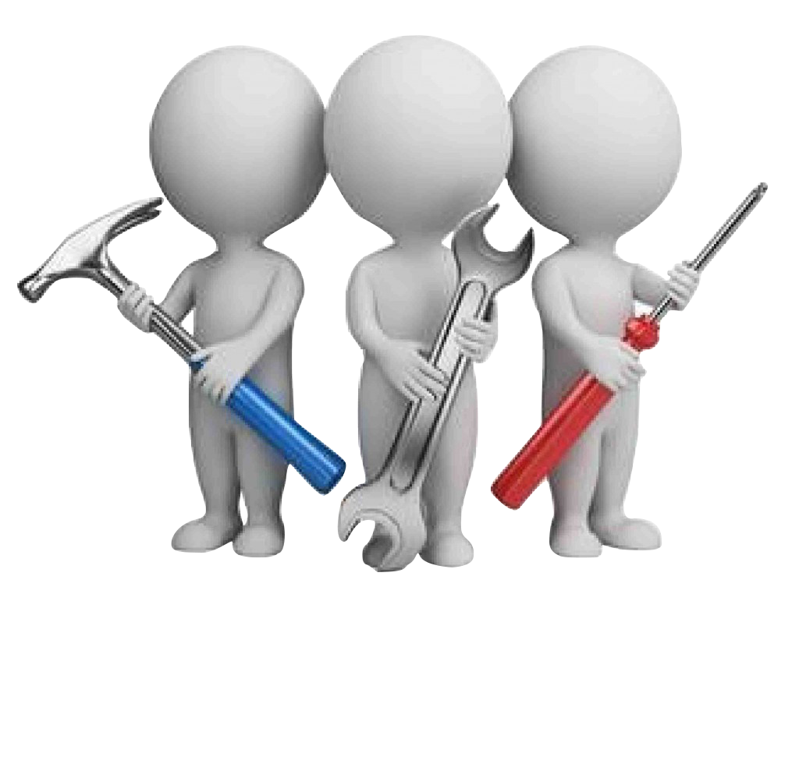

.png)
Sistemska rešenja
za tretman vode
Brzo i efikasno prečišćavanje vode
KontaktServisi
Deferizacija
Uklanjanje gvožđa, mangana i vodonik sulfida
Deferizatori su uređaji za uklanjanje rastvorenog gvožđa i mangana iz vode, koji u većim količinama mogu vrlo negativno uticati na mnoge tehnološke procese posebno u prehrambenoj industriji, tekstilnoj industriji i sl. ili učiniti vodu vrlo neprijatnom za piće.
Saznaj Više
Reverzna Osmoza
Proizvod se primenjuje kod desеlinizacije vode
Metoda koja služi za dobijanje pitke vode iz slane vode. Postupak koristi polupropusnu membranu kroz koju prolazi čista voda a zaostaju soli.
Saznaj Više
Demineralizacija
Proces dobijanja vode bez hemijskih jedinjenja
Demineralizacija je vrsta prečišćavanja vode. Iako se može odnositi na bilo koji proces tretmana koji uklanja minerale iz vode, termin demineralizacija je tipično rezervisan posebno za procese jonske izmene koji se koriste za skoro potpuno uklanjanje zagađivača jonskih minerala
Saznaj Više
O Nama
Nudimo širok izbor modula, posuda i filtracionih sistema koji zadovoljavaju specifične tehničke i komercijalne zahteve.
Osnovna delatnost firme Water Systems Mihajlov je proizvodnja i prodaja visokokvalitetnih uređaja, opreme i materijala koji se koriste u tretmanu voda. Od osnivanja do danas smo se kvalitetom proizvoda i usluga trudili da izgradi mu ugled i poverenje među korisnicima i dobavljačima. Imamo široko iskustvo i poznajemo različite industrijske procese.
Kontrola Kvaliteta
WSM proizvodi instrumente i module prema važećim propisima i standardima. Sprovodimo strogu kontrolu kvaliteta u svakom stadijum proizvodnje, tako da dizajn i realizacija osiguravaju apsolutnu pouzdanost i dugovečnost.
Instalacija, Startovanje i Održavanje
Sistem se instalira i pušta u pogon pod nadzorom WSM inženjera koji su odgovorni da postrojenje ostvari projektovane parametre pri graničnim uslovima. Za kontinualnu pouzdanost u radu kupcu se nudi dugoročni ugovor o održavanju.
Tehnička Podrška
Ispad iz rada može biti ekstremno skup u svakom procesu, malom ili velikom. WSM je organizovan da zadovolji potrebe brze isporuke rezervnih delova ili da obezbedi prisustvo servisera. Telefonski poziv je dovoljan da usledi brza akcija da se postrojenje osposobi za rad. Mi nikada ne ostavljamo naše korisnike bez podrške!
Kontaktirajte nas
Kako da nas nađete
Adresa Adresa 00, Srbija
Telefon +38100000000
E-Mail primer@gmail.com